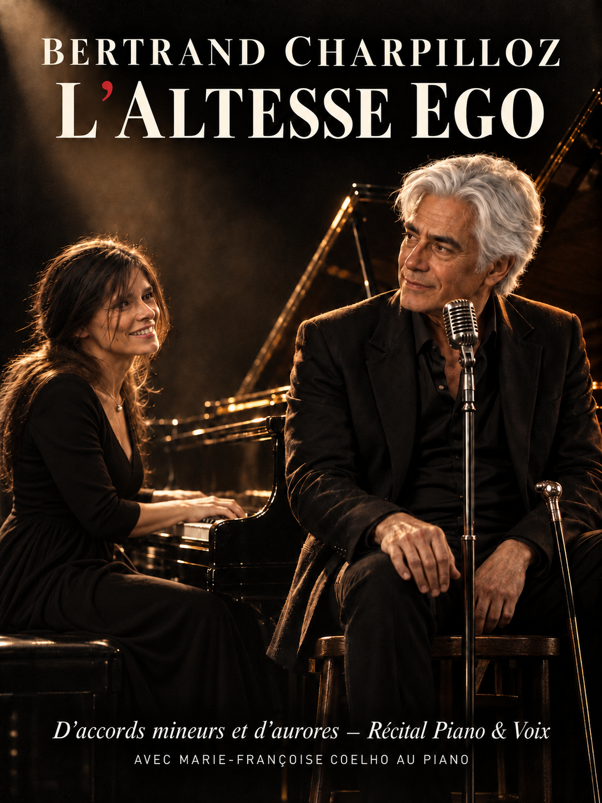
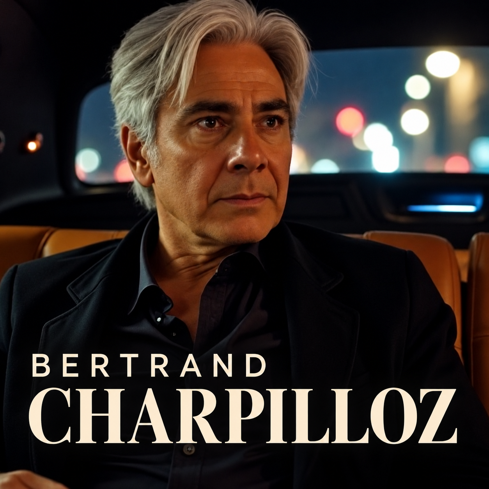

D’accords mineurs et d’aurores — Récital Piano & Voix
Avec Marie-Françoise Coelho au piano
À la croisée de la chanson française à texte, du parlé-chanté intimiste au ras du micro et du blues-cabaret nocturne, Bertrand Charpilloz dévoile un répertoire original de 18 œuvres portées par une voix de baryton grave et un parcours de résilience hors norme.
Afin de permettre aux Éditeurs, Labels et Tourneurs d'évaluer chaque facette du projet, ces 4 titres phares sont présentés en Double Lecture : une maquette de réalisation Radio Edit (potentiel single, radio & synchro cinéma) et une version Piano-Voix fidèle à la nudité acoustique du spectacle.
« J’aime le soleil qui brille, c’est mon étendard… »
Du parlé-chanté intimiste en Mi mineur vers un refrain majeur lumineux et fédérateur. Une philosophie de vie qui oppose le lâcher-prise, l'amour et la poésie à la force des éléments.
« Dis à la vigne, dis au vent, que j’ai essayé d’être vivant… »
Une œuvre contemplative sur le passage des saisons, les carnets de chansons et la plénitude d'un homme de 60 ans. C'est de ce texte qu'est tirée la devise du spectacle : « J'ai vécu d'accords mineurs et d'aurores ».
« Mars deux mille vingt-quatre… Une vie à me battre pour voir ma fille grandir. »
Colonne vertébrale émotionnelle du répertoire : d'avril 1997 (l'AVC hémorragique où la vie ne tient plus qu'à un fil) jusqu'à la reconquête patiente de la marche, de la parole et du bonheur paternel.
« Toi, ma petite idée secrète, de t’avoir sous ma couette, un bout de vie… ce serait chouette. »
Chanson éponyme du récital écrite en hommage à la pianiste Marie-Françoise Coelho. Un inventaire poétique, espiègle et sensuel qui fait swinger la langue française avec un flegme pince-sans-rire.

Né le 20 janvier 1966 à Saverne d'un père suisse et d'une mère métisse originaire de la Martinique, Bertrand Charpilloz puise dans ses racines plurielles un sens inné de la mélodie et du rythme, forgé dès l'enfance par la pratique de l'accordéon.
Ingénieur-conseil en organisation et gestion d'entreprise, sa vie est traversée par des épreuves fondatrices : la disparition tragique de sa sœur aînée Dominique dans le crash du Mont Sainte-Odile le jour de ses 26 ans (20 janvier 1992), puis un grave accident vasculaire cérébral hémorragique en 1997 qui le conduit à trois années de rééducation. En 2013, il publie le récit autobiographique « Mes liaisons cérébrales ».
À 60 ans, il livre un catalogue de 18 chansons originales où l'élégance du verbe (calembours, portraits féminins, voyages) rencontre une sincérité à l'état brut, dans la lignée de Serge Gainsbourg, Alain Bashung, Benjamin Biolay ou Alain Souchon.
Un projet structuré autour de trois axes de développement complémentaires sur l'espace francophone (France, Belgique, Suisse romande).
Catalogue cohérent de 18 textes originaux déposés, à haute densité littéraire. Fort potentiel de synchronisation audiovisuelle (cinéma, fictions, documentaires) et de réinterprétation.
Maquettes de pré-production finalisées (versions Radio Edit et Piano-Voix). Prêt pour l'entrée en studio acoustique afin de graver le grain de baryton naturel et le jeu pianistique de Marie-Françoise Coelho.
Le récital « L'Altesse Ego » en duo piano-voix offre une souplesse économique optimale (coûts techniques et logistiques réduits) parfaitement calibrée pour les théâtres, scènes conventionnées et centres culturels de 80 à 500 places.